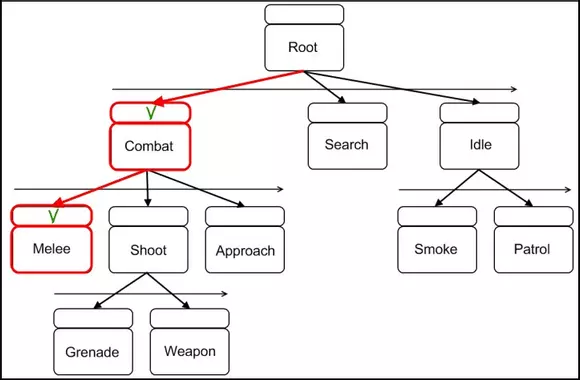

Un agent est est une entité qui peut obtenir des informations sur son environnement
et prendre des décisions en fonction de ces informations dans le but d’atteindre un objectif.
Ces agents possèdent des états qui sont des configurations uniques selon l'environnement dans lequel ils se trouvent.
Cest états ont pour but de permettrent à l'IA de trouver la meilleur façon d'agir selon la situation.
On parle par exemple "d'arbre de comportement":

Un exemple connu est celui de Pac-Man, sortit en 1980, chaque fantôme a un comportement différent.
Le fantôme rouge suit Pac-Man dès qu'il le voit.
Le fantôme rose vise l'endroit où va se trouver Pac-Man.
Le fantôme bleu va parfois dans la direction opposée de Pac-Man.
Le fantôme orange choisit une direction au hasard.